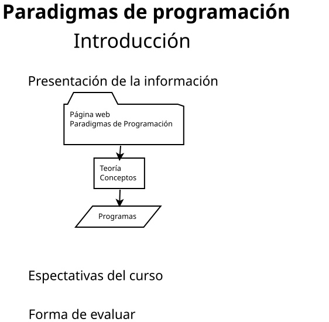

Evaluación
Evaluación opcional
- Evaluación mediante programas que presentará frente al pizarrón en clase determinada por la lista de asistencia. Por cada presentación: 10 % de la calificación trimestral.
- Si es incorrecto: 0 %.
- Si tiene error o errores: 40 %.
- Si esta bien: 100 %.
- Evaluación mediante prácticas. Por todas las prácticas del curso: 40 %.
- Evaluación mediante proyectos (tema relacionado, pero seleccionado por el estudiante). Por todos los proyectos presentados durante el semestre: 40% de la calificación final.
- La calificación final máxima es 9 (nueve).
- Para obtener un punto más del semestre debe presentar un examen de excelencia de todos los temas del curso. El cual se presentará en la fecha propuesta: 14 diciembre 2026.
Otra forma de evaluación
Evaluación opcional
Evaluaciones mediante examenes. Donde la ponderación de los examenes es del 70 %, y la elaboración de prácticas es de 20 %. Los examenes se aplicarán en las siguientes fechas:
- El primer examen se aplicará el 29 de septiembre del 2026.
- El segundo examen se aplicará el 6 de noviembre del 2026.
- El tercer examen se aplicará el 14 de diciembre del 2026.

Enlace para la parte final de la película 400 golpes.
Propuesta de José Sánchez Juárez